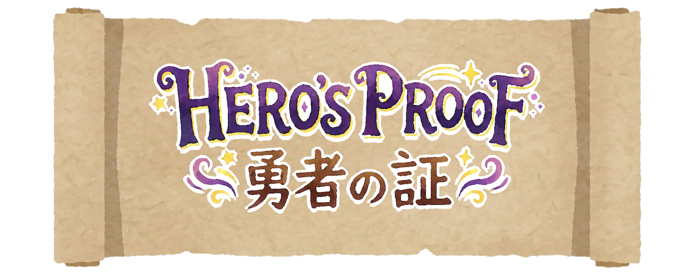

✦ Hero's Proof · 勇者の証 ✦
読んでみよう！ナレーションはいつも英語と日本語。キャラのセリフは「💬」ボタンで EN → EN+JP → JP をきりかえられるよ。
この章(しょう)のキー・スペル（大事(だいじ)な文(ぶん)）！タップすると、くわしい説明(せつめい)が出(で)るよ。
カードをタップすると、意味(いみ)と読(よ)み方(かた)が出(で)るよ！
全部(ぜんぶ)のクエストをクリアしよう！
ルミといっしょに、ステージごとに英語を学ぼう！
①物語 → ②呪文解析(じゅもんかいせき) → ③アイテム図鑑 → ④クエスト → ⑤ボス戦！